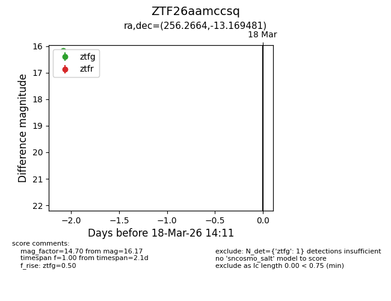
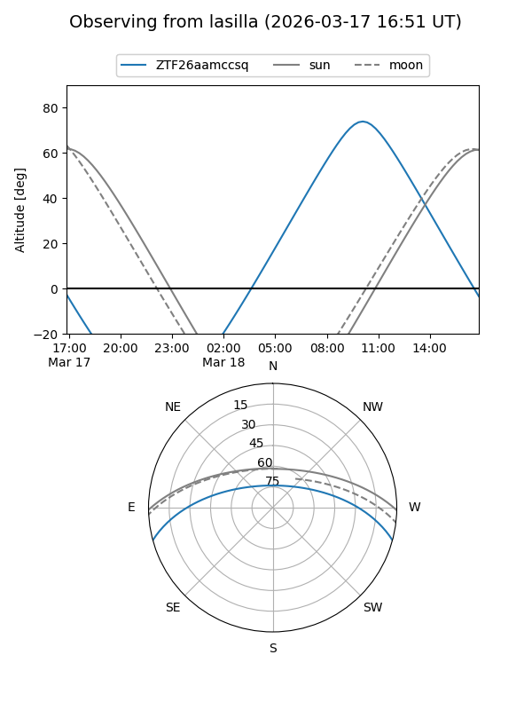
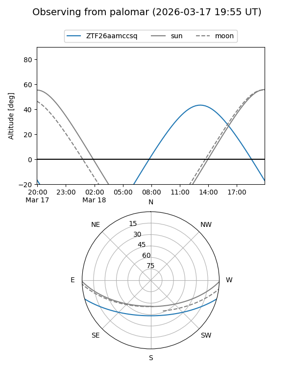

ZTF26aamccsq
Target ZTF26aamccsq at 2026-03-18 14:13
Aliases and brokers:
FINK: link
Lasair: link
ALeRCE: link
alt names
ZTF26aamccsq (ztf,fink_ztf)
Coordinates:
equatorial (ra, dec) = 256.2664,-13.16948
equatorial (HMS+DMS) = 17:05:03.93,-13:10:10.13
galactic (l, b) = (8.1750,+16.50140)
Flags:
Photometry:
last ztfg=16.17
1 ztfg detections
Lightcurve

Visibility


Additional plots